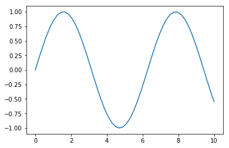
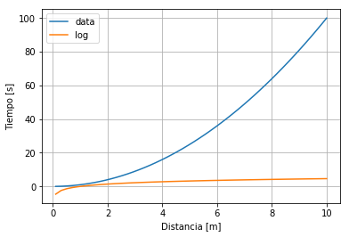
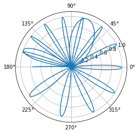
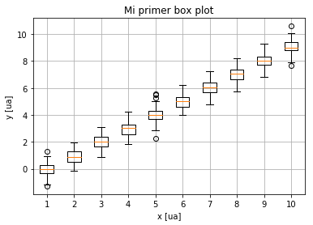
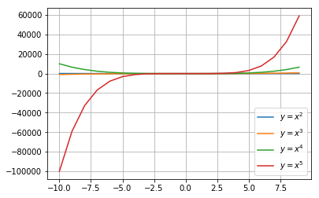
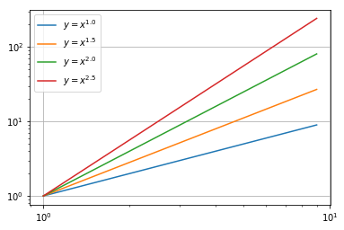
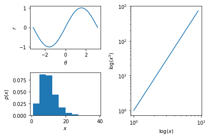

Clase 2 - Gráficos
¿Qué es Matplotlib?
Es una biblioteca de dibujo de Python 2D la cual genera figuras de alta calidad para su posterior publicación en gran variedad de formatos y en plataformas interactivas. Con esta biblioteca se pueden generar gráficas, histogramas, espectros de potencia, gráficos de barras, gráficos de error, gráficos de dispersión y más. En la documentación de este módulo se puede encontrar más información.
Una buena técnica para aprender a realizar gráficos haciendo uso de Matplotlib es la siguiente:
- Visitar la galería de Matplotlib.
- Buscar un gráfico similar al que desea realizar.
- Ver el código y adaptarlo a conveniencia.
Además de la documentación de éste módulo, adjunto se encuentra el archivo trabajado en clase.
Bases
import matplotlib.pyplot as plt
import numpy as np
x = np.linspace(0, 10)
y = np.sin(x)
plt.figure()
plt.plot(x, y)
plt.show()
Las primeras dos líneas importan matplotlib y numpy, las siguientes crean un arreglo equiespaceado de números entre 0 y 10, y otro con el seno de cada uno de los elementos, luego se crea una nueva figura, se grafican los valores de y y por último se muestra en pantalla.

import matplotlib.pyplot as plt
import numpy as np
x = np.linspace(0.1, 10)
y = x ** 2
plt.figure()
plt.plot(x, y, label='data')
plt.plot(x, np.log(y), label='log')
plt.xlabel('Distancia [m]')
plt.ylabel('Tiempo [s]')
plt.legend(loc='best')
plt.grid()
plt.show()
La propiedad label agrega una etiqueta al correspondiente plot y, posteriormente, es mostrado por legend; ubicando las etiquetas en la mejor posición dentro de la gráfica.
xlabel al igual que ylabel etiquetan el eje x y el eje y, respectivamente.
Tanto label como xlabel, ylabel reciben strings o cualquier cosa que pueda ser convertida con %.

import numpy as np
import matplotlib.pyplot as plt
theta = np.linspace(0, 3 * np.pi, 100000)
r = np.sin(theta ** 2)
plt.figure()
plt.polar(theta, r)
plt.show()
Como su nombre lo indica, polar realiza una gráfica en coordenadas polares,
tomando como argumentos el ángulo y la distancia .

# Se asume que las librerías correspondientes ya están importadas
plt.figure()
plt.boxplot([
np.random.normal(i, 0.5, size=(100, ))
for i in range(0, 10)
])
plt.title('Mi primer box plot')
plt.xlabel('x [ua]')
plt.ylabel('y [ua]')
plt.grid()
plt.show()
La segunda línea, boxplot, realiza una gráfica conocida en estadística como
’diagrama de cajas y bigotes’ (box and whisker) para cada valor de x. La caja
se extiende del cuartil inferior al superior, donde la línea indica la mediana
de estos valores. Los bigotes se extienden desde la caja mostrando el rango de
los datos. Para este caso, se tiene para x una lista con números aleatorios de
una distribución gaussiana con una desviación stándard de .

plt.figure()
for i in range(2, 6):
x = np.arange(-10, 10)
y = x ** i
plt.plot(x, y, label=r'$y = x ^ {{{exp}}}$'.format(exp=i))
plt.legend()
plt.grid()
plt.show()
La primera línea crea una figura, la segunda evalúa para valores de de
a (sin tomar el valor ) y después se grafican. La letra r indica
que se hará uso de LaTeX; .format convierte los valores de a string.

plt.figure()
for i in range(2, 6):
x = np.arange(0, 10)
y = x ** (i / 2)
plt.loglog(x, y, label=r'$y = x ^ {{{exp}}}$'.format(exp=i/2))
plt.legend()
plt.grid()
plt.show()
Al igual que en el código anterior, las primeras líneas cumplen la misma función. La quinta línea toma el logaritmo en base Euler (por defecto) de y .

x = np.arange(-10, 10)
y = x ** 3
theta = np.linspace(-np.pi, np.pi)
r = np.sin(theta)
rands = np.random.chisquare(10, size=(10000, ))
plt.figure()
plt.subplot(221)
plt.plot(theta, r)
plt.xlabel(r'$\theta$')
plt.ylabel(r'$r$')
plt.subplot(223)
plt.hist(rands, normed=True)
plt.xlabel(r'$x$')
plt.ylabel(r'$p(x)$')
plt.subplot(122)
plt.loglog(x, y)
plt.xlabel(r'$\log(x)$')
plt.ylabel(r'$\log(x^3)$')
plt.tight_layout()
plt.show()
Subplot se encarga de crear múltiples gráficas en una figura, sus argumentos corresponden al número de filas, número de columnas y por último, el número de la figura al que corresponderá los subplots. La penúltima línea agrega un espacio entre los subplots.
